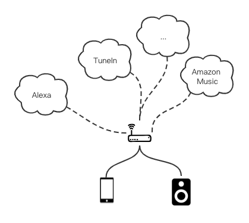
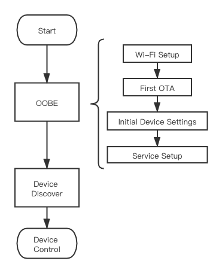

Linkplay Music Kit
Linkplay Music Kit是Linkplay Home Audio方案的app端SDK；通过它，您可以快速的将我们的解决方案实现到您的产品里。

MusicKit主要解决了两方面的问题：
- 维护与固件的通讯协议，使您可以简洁的与设备进行交互而不必关心琐碎的通讯技术问题
- 封装了网络服务（音乐服务、智能语音服务等）的复杂度，使您可以快速接入它们而不必关心实现细节
而从流程的维度讲，用户将产品带回家之后可以做如下归结：

OOBE
Out-of-box experience，用户首次将产品买回家之后的开箱流程。这个流程的体验需要尽可能简单与健壮。 可以看到，设置的流程是由下网上，由硬件向软件，由底层服务向高层服务的：
| 步骤 | 分层 |
|---|---|
| Wi-Fi Setup | 链路层 |
| First OTA | 固件系统 |
| Initial Device Settings | 系统软件设置，例如时区、语言等 |
| Service Setup | 应用层服务设置，各种软件服务的设置 |
Wi-Fi Setup
第一步是将设备连接到互联网上。目前我们提供了如下配网方式，请根据自己的情况选择：
| 名称 | 说明 |
|---|---|
| BLE配网 | 如果您的模组有BLE模块，则可以使用此种配网方式 |
| 直连配网 | 如果您的模组没有BLE模块，可以使用此种方式 |
-
用户将产品买回家的时候，距离产品量产可能已经有了新的OTA版本。为了能提供给用户最好的产品服务，第一次OTA检测是必须的。
Initial Device Settings
当硬件、固件都处于最新状态之后，就需要给设备进行一些本地化、个性化设置了，这包括：
- 语言
- 时区
- 静默升级时间段
Service Setup
再之后，就需要提供之上的应用层服务了：
- 音乐服务，例如 Tunein, Amazon Music
- 语音服务，例如 Alexa
这样，OOBE的流程就结束了，用户可以开始设备的使用。
设备发现
设备发现是设备控制的前提：Device Discover
在我们的方案中，设备发现主要基于目前最流行的两个局域网设备发现协议：
以此来提高设备发现的稳定性。
设备交互
播放控制
播放控制是该方案的主要能力。
其他功能
- 闹钟
- 预置
- OTA
音源接入
我们已经为您集成了很多流行的音源，包括但不限于：
- Amazon Music
- TuneIn
- iHeartRadio
请与您的接口人联系获得对应的SDK以及文档。